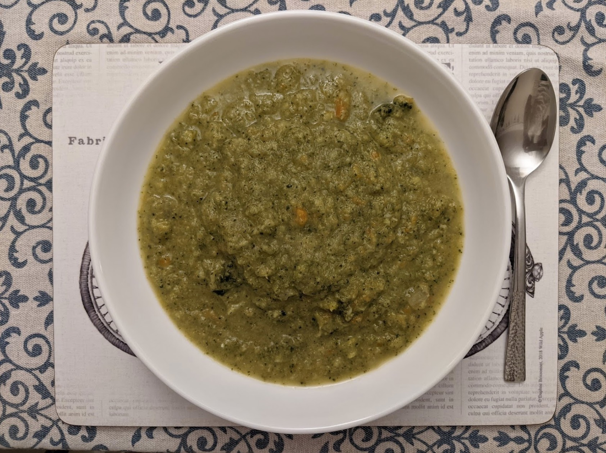

Broccoli soup
How do people not like broccoli when it can taste this good?

Ingredients
1 onion
2 carrots
2 heads of broccoli
750ml vegetable stock
⅓ Grated parmigiano
¼ cup greek yoghurt
Chop up the onions and fry in some olive oil along with the diced carrots. Cook until softened (4-6 minutes).
Chop up and add in the broccoli, stock, salt and pepper and cook until broccoli is tender (15-20 minutes).
Use handheld blender to purée soup.
Add parmesan and yoghurt, stir, and dish up. Serve with fresh bread.
Serves 4-5.
Inspired by
this recipe.